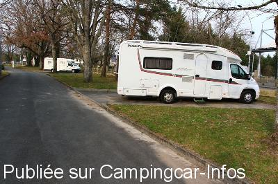
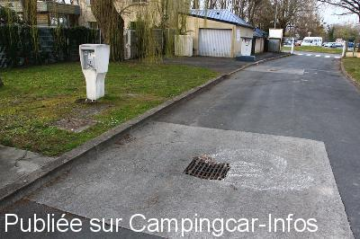
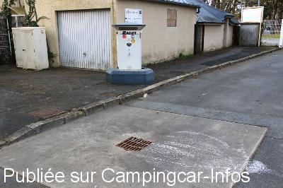
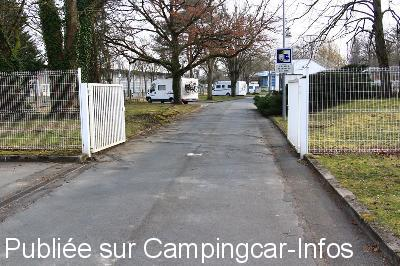

ASN = Aire de services avec stationnement nuit possible de :
CHÂTEAUROUX
(N° 843)
Accès/adresse :
17 avenue du Parc des Loisirs
Base de loisirs de Belle Isle
36000 CHÂTEAUROUX
Base de loisirs de Belle Isle
36000 CHÂTEAUROUX
Latitude : (Nord) 46.82381° Décimaux ou 46° 49′ 25′′
Longitude : (Est) 1.69493° Décimaux ou 1° 41′ 41′′
Tarif : 2016
Stationnement gratuit
Eau ou 1 h d'électricité : 2,50 €
Jetons.
Type de borne : RACLET
Services :


Aire de loisirs
Autres informations :
Ouvert d'avril à octobre
5 emplacements

Le 28/03/2016 par Paul Guntz

Le 28/03/2016 par Paul Guntz

Le 28/03/2016 par Paul Guntz

Le 28/03/2016 par Paul Guntz
de
Paul Guntz
le 28/03/2016 :
De passage le 24.03.16 – Toujours 5 places de disponibles. Deux aires de service, dont l'une est déclarée « hors service » et l'autre (Raclet) inutilisable à cause de l'écoulement bouché. Dommage. Mais ce n'est que provisoire, car l'aire est bien pratique et calme la nuit.
De passage le 24.03.16 – Toujours 5 places de disponibles. Deux aires de service, dont l'une est déclarée « hors service » et l'autre (Raclet) inutilisable à cause de l'écoulement bouché. Dommage. Mais ce n'est que provisoire, car l'aire est bien pratique et calme la nuit.
de
hymer584
le 26/02/2016 :
Malgré la proximité de la route, nous avons passé une nuit très calme sur cette aire où 5 places nous sont réservées.
Malgré la proximité de la route, nous avons passé une nuit très calme sur cette aire où 5 places nous sont réservées.
de
Coletgil
le 16/06/2012 :
Attention aux horaires de passage au moins hors saison. Le 10/06/2012, l'acceuil du camping était fermé de 12 à 15h, nous avons dû aller faire le plein ailleurs.
Attention aux horaires de passage au moins hors saison. Le 10/06/2012, l'acceuil du camping était fermé de 12 à 15h, nous avons dû aller faire le plein ailleurs.
de
IDEFIX13
le 13/10/2010 :
Nous avons eu la chance de trouver la 5ème place de libre, pas une de plus. Dommage car le parc à proximité est superbe et permet de faire de belles promenades ou son petit sport. Il me semble que cette ville mérite qu'elle fasse des places supplémentaires à moins que ce ne soit dans le but d'aller visiter le camping voisin ?
Nous avons eu la chance de trouver la 5ème place de libre, pas une de plus. Dommage car le parc à proximité est superbe et permet de faire de belles promenades ou son petit sport. Il me semble que cette ville mérite qu'elle fasse des places supplémentaires à moins que ce ne soit dans le but d'aller visiter le camping voisin ?
de
gerard
le 11/09/2010 :
Depuis cette année, il a été mis à la disposition des camping-cars 5 places de stationnement à côté de l'aire de services. §
Depuis cette année, il a été mis à la disposition des camping-cars 5 places de stationnement à côté de l'aire de services. §
de
aldebert
le 14/04/2010 :
Aire de services accessible même si le camping est fermé. Grand parking calme situé juste à coté d'un grand parc avec aire de jeux pour les enfants.
Aire de services accessible même si le camping est fermé. Grand parking calme situé juste à coté d'un grand parc avec aire de jeux pour les enfants.
de
brigitte
le 15/08/2009 :
Nous sommes passés fin juillet, il y a bien une borne à coté du camping mais pas d'aire pour stationner et dormir à moins d'aller sur le camping.
Nous sommes passés fin juillet, il y a bien une borne à coté du camping mais pas d'aire pour stationner et dormir à moins d'aller sur le camping.
de
le 31/10/2008 :
L'aire est déjà fermée fin septembre ainsi que le camping, donc pas de jeton !
L'aire est déjà fermée fin septembre ainsi que le camping, donc pas de jeton !